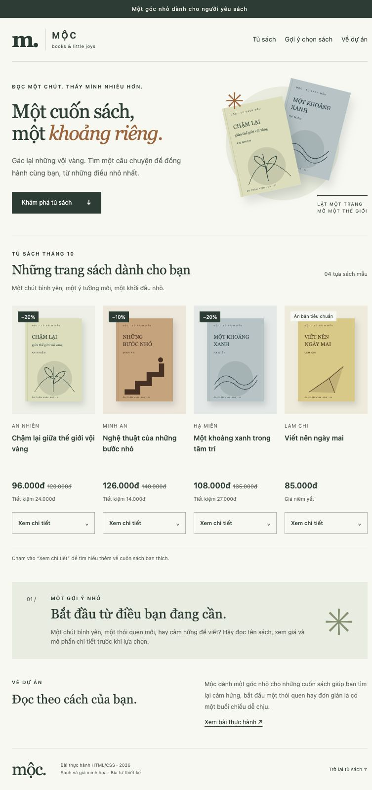
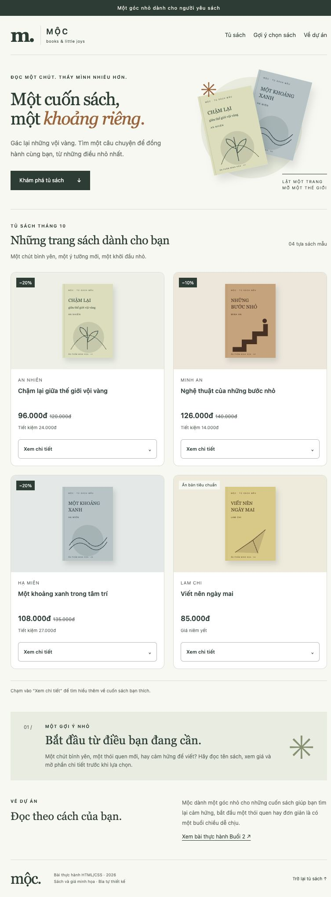

PHÁT TRIỂN ỨNG DỤNG WEB/TMĐT · BUỔI 2 · 03/11/2026
Hoàn thiện thẻ sách bằng HTML5 và CSS3
Tiếp tục website Mộc từ Buổi 1, tập trung vào danh sách bốn cuốn sách. Giữ nguyên nội dung, ảnh bìa và thao tác mở chi tiết.
Website tham khảo: Fahasa. Bản gốc: commit 5a2ac17 của repository Buổi 1. Báo cáo khảo sát cũ và kiểm tra Buổi 1 vẫn được giữ lại.
Mã và báo cáo này được hoàn thiện với sự hỗ trợ của Codex. Mục “tự sửa độc lập” của sinh viên chưa được xác nhận; hướng dẫn thực hành ở cuối trang giúp hoàn thành phần đó. Các câu trả lời bên dưới là tài liệu giải thích theo mã thực tế để người học đọc, thử và diễn đạt lại.
1. Rà soát và chọn phần cải thiện
Bản cũ đã có header, nav, main, section, article, footer, tiêu đề h1–h3, ảnh có alt, CSS ngoài, Flexbox, Grid và focus-visible. Đây là phần đã làm đúng, được giữ lại. Không thêm framework, JavaScript, trang bán hàng mới hoặc chức năng giỏ hàng.
| Vấn đề quan sát | Nguyên nhân / hướng cải thiện | Kết quả mong muốn |
|---|---|---|
| Ở 768 px vẫn có bốn cột; trước sửa đo được mỗi thẻ rộng 168 px. | Quy tắc hai cột chỉ áp dụng dưới 700 px. Cho hai cột từ 1000 px trở xuống; một cột từ 420 px trở xuống. | Thêm chỗ cho tên, giá và thao tác trên màn hình vừa/nhỏ. |
| Thẻ chưa có khung riêng; vùng nội dung có padding ngang bằng 0. | Thêm border 1 px, border-radius 12 px, nền trắng; đặt padding 16 px cho .product-body. | Nhìn rõ phạm vi từng cuốn sách, nội dung cách mép khung. |
| Nút chi tiết đổi nền tức thời dù ảnh bìa đã có transition. | Thêm transition 0,2 giây cho màu nền, chữ và viền của summary. | Phản hồi hover nhẹ; giữ focus-visible và tắt chuyển động khi người dùng yêu cầu. |
Thứ tự thực hiện: đọc cấu trúc cũ → kiểm tra HTML/CSS → sửa Box Model → chỉnh số cột → kiểm tra thao tác và các kích thước. Bổ sung aria-labelledby cho từng article, trỏ đến id của tên sách; không đổi nội dung sản phẩm.
2. Những kỹ thuật đã thực hành
- HTML ngữ nghĩa: section là khu vực tủ sách, article là từng cuốn, h2 là tiêu đề khu vực, h3 là tên sách. Giữ details/summary vì thao tác là mở nội dung tại chỗ; không đổi thành liên kết giả đến trang chưa tồn tại.
- CSS ngoài: index.html liên kết css/style.css?v=3. Phần ?v=3 giúp trình duyệt tải bản CSS mới. Font, màu chữ và nền kế thừa bản Mộc; không dùng Bootstrap/Tailwind.
- Selector:
summarychọn theo phần tử;.product-bodychọn theo class;.product .cover-stagechọn phần tử con cháu trong thẻ sách;summary:hovervà:focus-visiblechọn trạng thái. - Box Model: product có border 1 px và bo góc 12 px; product-body có padding 16 px; details có margin-top 12 px. Quy tắc
* { box-sizing: border-box; }tính cả padding và border trong kích thước đã đặt, không tính margin. - Flexbox: summary dùng display:flex, justify-content:space-between, align-items:center và gap:8px để căn nhãn và mũi tên. Pricing dùng flex-wrap để giá gốc/giá bán có thể xuống dòng.
- Grid: product-grid dùng repeat(4,minmax(0,1fr)) ở màn hình lớn, hai cột ở màn hình vừa và một cột ở màn hình nhỏ. gap tạo khoảng cách giữa các thẻ. Giữ object-fit:contain để xem toàn bộ bìa; cover sẽ lấp đầy khung nhưng có thể cắt ảnh.
- Hover/focus: nền nút chuyển sang xanh đậm với chữ trắng; focus-visible tạo outline 3 px khi dùng bàn phím. Viền focus không chiếm thêm diện tích bố cục.
.product {
min-width: 0;
border: 1px solid var(--line);
border-radius: 12px;
background: #fff;
}
.product-body { padding: 16px; }
.product .cover-stage { border-radius: 11px 11px 0 0; }
3. Ảnh trước và sau
Hai ảnh dưới chụp cùng website ở khung 768 × 1000 px, xuất ảnh toàn trang. Bấm ảnh để xem kích thước đầy đủ.




Ảnh hoàn thiện: 1366 px · 390 px · 320 px · Focus bàn phím · Mở chi tiết bằng Enter.


4. Báo cáo kiểm thử
| Nội dung | Kết quả | Cách kiểm tra / ghi chú |
|---|---|---|
| HTML mở được, CSS áp dụng | Đạt trên local | Mở bằng máy chủ HTTP; đọc computed style xác nhận Grid, border, padding. |
| Hình ảnh | Đạt | Tất cả ảnh complete và naturalWidth > 0; xem ảnh chụp để kiểm tra tỷ lệ bìa. |
| Bố cục ở 1366 / 768 / 390 / 320 px | Đạt | 4 / 2 / 1 / 1 cột; không có tràn ngang cấp trang. Đây là kiểm tra trình duyệt desktop với viewport đổi kích thước, chưa phải điện thoại thật. |
| Liên kết nội bộ, ảnh và CSS | Đạt kiểm tra đường dẫn | Đối chiếu file đích và id neo trong HTML; mở liên kết Tủ sách và báo cáo bằng trình duyệt. |
| Focus và mở chi tiết | Đạt | Tab/Shift+Tab tạo focus-visible, outline 3 px; Enter mở details và đổi nhãn thành Thu gọn. |
| Hover | Kiểm tra theo CSS và thao tác chuột | summary:hover chuyển nền/chữ; transition 0,2 giây. Trạng thái đang mở cũng dùng nền đậm. |
| Vấn đề phát hiện sau sửa | Đã sửa với AI hỗ trợ | Khi đổi sang hai cột ở 768 px, min-height:88px của tên sách từ bản cũ để thừa khoảng trắng. Giảm xuống 48px trong breakpoint 1000px rồi chụp lại. |
| Sinh viên tự sửa độc lập | Chưa xác nhận | Cần người học trực tiếp thực hành, ghi nhận kết quả; không tính thao tác của AI là tự sửa của sinh viên. |
5. Bảy câu hỏi kiến thức
Câu 1. Những phần tử HTML5 được dùng và lý do?
Trong tủ sách, section gom một chủ đề có tiêu đề h2. Mỗi article chứa một cuốn sách và được gắn tên qua aria-labelledby. Tên sách là h3 dưới h2 của tủ sách. img hiển thị bìa, p chứa tác giả, strong nhấn giá bán, del thể hiện giá gốc. details/summary mở và đóng mô tả mà không cần JavaScript. Toàn trang còn có header, nav, main và footer. Nội dung mô tả dạng cặp tên–giá trị dùng dl/dt/dd; nếu bổ sung danh sách không thứ tự thì dùng ul/li.
Câu 2. Margin khác padding thế nào?
Padding là khoảng đệm phía trong viền; .product-body có padding:16px nên chữ và nút không sát mép. Margin là khoảng cách phía ngoài phần tử; .product details có margin-top:12px để cách vùng giá. Khoảng cách giữa các thẻ do gap của Grid tạo ra, không phải padding.
Câu 3. Flexbox dùng ở đâu?
Summary là phần tử cha dùng Flexbox để xếp nhãn và mũi tên trên một hàng. justify-content:space-between đẩy hai phần về hai đầu trục chính; align-items:center căn giữa theo trục còn lại. gap:8px giữ khoảng cách tối thiểu giữa chúng. Nếu đổi justify-content thành flex-start, mũi tên nằm sát nhóm chữ hơn thay vì về mép phải. Flexbox còn có ở hàng giá, header và menu.
Câu 4. Grid khác Flexbox như thế nào?
Flexbox phù hợp bố trí theo một trục chính, như nhãn–mũi tên hoặc hàng giá. Grid tổ chức hàng và cột rõ ràng. Danh sách có bốn sách nên Grid giúp chia các cột bằng nhau và đổi số cột theo màn hình. repeat lặp định nghĩa cột; minmax(0,1fr) cho cột co lại mà không bị nội dung dài ép rộng.
Câu 5. Xóa display:grid thì sao?
Div product-grid trở về bố cục block thông thường; các article xếp dọc theo luồng thay vì thành bốn cột. grid-template-columns không còn tác dụng tạo cột; gap cũng không tạo khoảng cách Grid như trước. Nội dung sách vẫn còn, chỉ cách sắp xếp thay đổi.
Câu 6. Vì sao cần alt?
Alt mô tả bìa khi ảnh không tải được và cung cấp nội dung cho trình đọc màn hình, chẳng hạn “Bìa minh họa sách Chậm lại giữa thế giới vội vàng”. Ảnh trang trí ở hero dùng alt rỗng và nằm trong vùng aria-hidden vì không bổ sung nội dung cần đọc. Không dùng alt rỗng cho ảnh sản phẩm có ý nghĩa.
Câu 7. Một đề xuất của AI được kiểm tra/điều chỉnh?
AI đề xuất đưa danh sách về hai cột ở 768 px. Sau khi chạy, phần tên sách vẫn giữ min-height:88px từ bố cục cũ nên xuất hiện khoảng trắng thừa. Trong lượt làm này, Codex kiểm tra ảnh và giảm xuống 48px. Đây là ví dụ kiểm tra đề xuất của AI; sinh viên cần tự chạy và giải thích lại, không nhận thao tác này là phần mình tự sửa độc lập.
6. Thực hành trực tiếp trước khi nộp
Phần này cần sinh viên làm thật. Nếu chưa làm, giữ trạng thái “chưa xác nhận”, không điền kết quả giả.
- Mở trang ở 390 px. Chọn vùng nội dung của một thẻ sách và xem padding hiện tại là 16 px.
- Trong css/style.css, đổi
.product-body { padding:16px; }thànhpadding:20px. Dự đoán: nội dung cách viền thêm 4 px mỗi phía, chiều rộng còn lại cho chữ giảm 8 px. - Lưu file, tải lại trang, kiểm tra tên sách/nút có xuống dòng không và chụp ảnh trước–sau. Nếu khoảng đệm quá lớn, tự chọn lại giá trị và giải thích.
- Ghi ngắn: vấn đề mình quan sát, dòng CSS tự đổi, kết quả thực tế và lý do giữ/đổi giá trị. Cập nhật dòng “tự sửa độc lập” sau khi hoàn tất và commit thay đổi.
Ôn thêm các yêu cầu sửa trực tiếp: đổi màu giá ở .pricing strong; đổi số cột ở .product-grid (chú ý media query đang có hiệu lực); đổi khoảng cách menu ở .site-header nav; sửa alt ở img của sách. Thử hai và ba cột bằng grid-template-columns; thử flex-start và space-between ở summary, rồi so sánh trước khi chọn bản cuối.
7. Sử dụng AI và tệp nộp
Codex hỗ trợ đọc đề, dò repository, rà soát, sửa HTML/CSS, chụp ảnh và viết báo cáo. Các yêu cầu thực tế và giới hạn xác nhận được ghi tại AI_USAGE.md. Không có khảo sát Fahasa mới trong Buổi 2; dùng lại bài Buổi 1.
- HTML: index.html; CSS: css/style.css; giữ thư mục images.
- Ảnh trước–sau và ảnh hoàn thiện: docs/evidence/buoi-2/.
- Báo cáo kiểm thử, giải thích và bảy câu hỏi: trang này.
- README.md và AI_USAGE.md: hướng dẫn chạy, lịch sử và sử dụng AI.
- Phần tự sửa độc lập: sinh viên bổ sung sau khi thực hành.
Đề bài gốc: mục 15 ở trang 23 dẫn “bảy câu hỏi ở phần 5”; báo cáo này dùng đúng bảy câu tại mục 12, trang 21.
Mộc · Buổi 2 · HTML/CSS thuần · Không có giỏ hàng hoặc thanh toán.